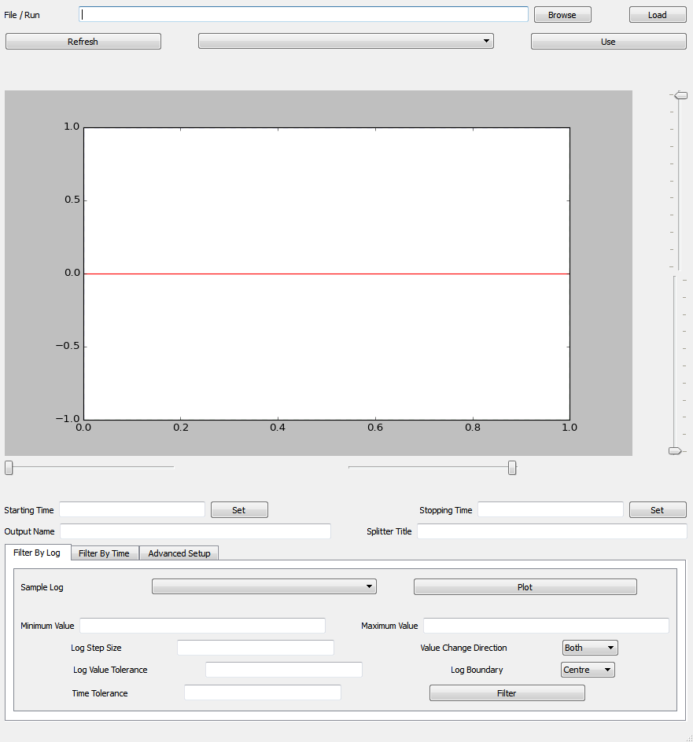

Filter Events Interface#
Description#
The Filter Events interface provides aid to users in order to set up event filter with different Functionalities. This interface utilises the algorithm GenerateEventsFilter which is able to generate event splitters according to user’s requirement for filtering events. The generated time splitters are stored either in a SplittersWorkspace or a MatrixWorkspace. Both of them will be used by algorithm FilterEvents which filters the events from a EventWorkspace to one or multiple EventWorkspaces according to an input Splitters Workspace containing a series of splitters.
On the bottom section the user has an option of Generate event filters by sample log value or Generate event filters by time. User also has an option of filtering events using Advanced Setup.
Layout#
{kind=link}

Data Loading#
For the data loading step, MantidWorkbench provides an interface in which the user shall select the appropriate file via Browse button or by entering an integer as a valid run number in the File/Run field, if the instrument name is set up in Mantid. The user must provide a file, which contains valid sample logs for splitting and EventWorkspace. The data will be loaded once the user has clicked upon the Load button. With the help of drop-down list, user is be able to load more than one file and then click on the Use button which will load the selected file. If the file cannot be found in the drop-down list then user can click Refresh button which should update the drop-down list and enable user to select any browsed file.
Plotting#
Once the file has been selected then the Interface would automatically generate the plot using the provided file. If the user wish to plot another file then that could be achieved by selecting another file from drop-down list and clicking on the Use button, which will automatically plot the new graph generated from the selected file.
Output & Storing Event Splitters#
The output will be one or multiple workspaces according to the number of index in splitters. The output workspace name is the combination of parameter OutputWorkspaceBaseName and the index in splitter. The Splitter Title field is used as title of output splitters workspace and information workspace. An event splitter used in Mantid contains start time, stop time and target workspace. Any data structure that has the above 3 properties can serve as an event splitter. There are two types of output workspaces for storing event splitters that are supported by GenerateEventsFilter algorithm.
Splitters Workspace: It is a TableWorkspace that has 3 columns for start time, stop time and target workspace for events within start time and stop time. This type of workspace is appropriate for the case that the amount of generated event splitters are not huge.
MatrixWorkspace: It uses X-axis to store time stamp in total nanoseconds and Y-axis to store target workspace. For example, \([x_i, x_i+1]\) and \([y_i]\) construct an event filter as start time is \([x_i]\), stop time is \([x_i+1]\), and target workspace is \([y_i-th]\) workspace. If \([y_i]\), is less than 0, then it means that all events between time \([x_i]\) and \([x_i+1]\) will be discarded. This type of workspace is appropriate for the case that the amount of generated event splitters are huge, because processing a MatrixWorkspace is way faster than a TableWorkspace in Mantid.
Advanced Setup#
The Advanced Setup section on the bottom of the interface provides access to the following functionality:
Action |
Effect |
|---|---|
TOF Correction To Sample |
Type of correction on neutron events to sample time from detector time. |
Fast Log |
Fast log will make output workspace to be a maxtrix workspace. |
Generate Filter In Parallel |
Use multiple cores to generate events filter by log values. Default as Serial which uses a single core and Parallel uses multiple cores. |
Spectrum without Detector |
Approach to deal with spectrum without detectors. |
Filter By Pulse Time |
Filter the event by its pulse time only for slow sample environment log.This option can make execution of algorithm faster. But it lowers precision. |
Output Workspace Indexed From 1 |
If selected, the minimum output workspace is indexed from 1 and continuous. |
Group Output Workspace |
Option to group all the output workspaces. |
Split Sample Log |
If selected, all sample logs will be splitted by the event splitters. It is not recommended for fast event log splitters. |
Categories: Interfaces | FilterEventUI